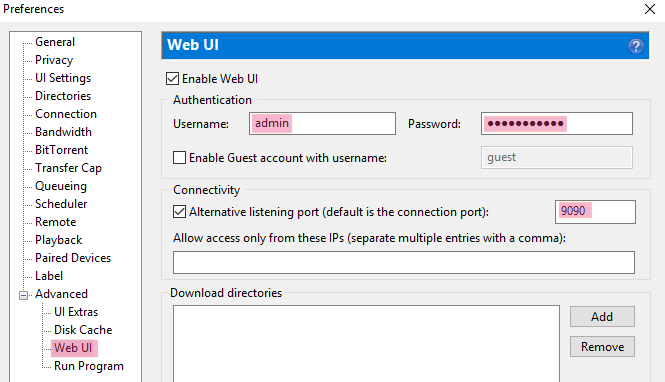
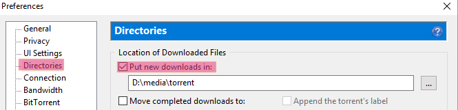
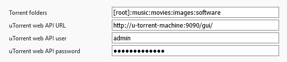

uTorrent: ‘Advanced’ | ‘Webu UI’ | ‘Enable Web UI’ (port configuration is optional)

uTorrent: ‘Directories’ | ‘Put new downloads in’ (the files will be downloaded into the corresponding
subdirectories of this folder):

You also need to provide uTorrent API url, username and password in the addon settings:

Only WebUI username/password configuration is required.